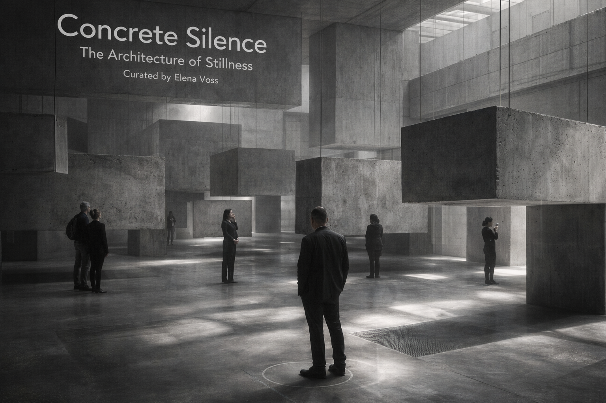
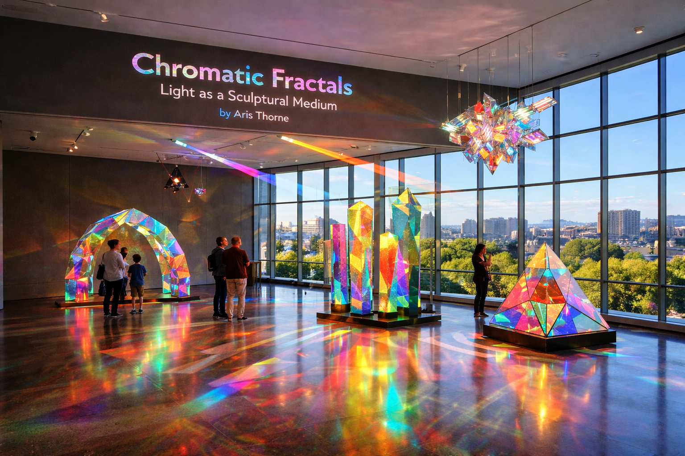

Featured Exhibitions

Concrete Silence: The Architecture of Stillness
This immersive exhibition transforms the Grand Atrium into a sensory exploration of "Brutalist Zen." Curated by world-renowned architect Elena Voss, the show features large-scale, monochromatic slabs of raw concrete suspended mid-air, creating a labyrinth of shadows. Instead of traditional placards, the exhibition utilizes directional audio, where whispers of architectural history and ambient field recordings from construction sites play only when a visitor stands in specific "zones of stillness." It challenges the viewer to find beauty in the heavy, the cold, and the unyielding.
Chromatic Fractals: Light as a Sculptural Medium
Located in the Sky Gallery, this vibrant exhibition features the work of digital artist Aris Thorne. Utilizing the museum’s unique floor-to-ceiling glass, Thorne has installed a series of dichroic glass prisms and programmed LED arrays that react to the sun’s position throughout the day.
